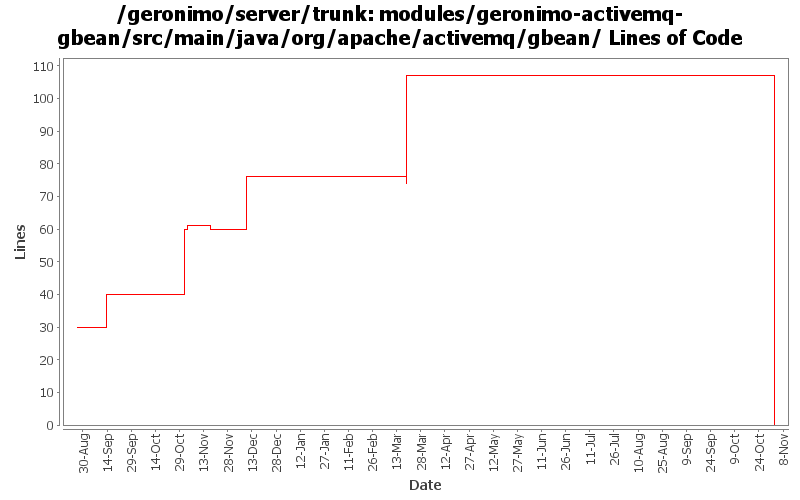

[root]/modules/geronimo-activemq-gbean/src/main/java/org/apache/activemq/gbean
 management
(0 files, 0 lines)
management
(0 files, 0 lines)

| Author | Changes | Lines of Code | Lines per Change |
|---|---|---|---|
| Totals | 24 (100.0%) | 139 (100.0%) | 5.7 |
| jdillon | 12 (50.0%) | 85 (61.2%) | 7.0 |
| kevan | 4 (16.7%) | 29 (20.9%) | 7.2 |
| dain | 1 (4.2%) | 16 (11.5%) | 16.0 |
| jlaskowski | 1 (4.2%) | 6 (4.3%) | 6.0 |
| vamsic007 | 1 (4.2%) | 2 (1.4%) | 2.0 |
| chirino | 1 (4.2%) | 1 (0.7%) | 1.0 |
| prasad | 4 (16.7%) | 0 (0.0%) | 0.0 |
GERONIMO-3565. Modules distributed amongst framework/modules and plugins
0 lines of code changed in 4 files:
r6663@Bliss: jason | 2007-03-18 15:28:48 -0700
Branch for server/trunk re-org
r6664@Bliss: jason | 2007-03-18 15:38:19 -0700
New parent dir
r6665@Bliss: jason | 2007-03-18 15:41:22 -0700
new dir
r6666@Bliss: jason | 2007-03-18 15:48:27 -0700
Repackage amq stuff into org.apache.geronimo.activemq
r6667@Bliss: jason | 2007-03-18 15:57:00 -0700
Rename geronimo-activemq-gbean* modules to geronimo-activemq*
r6668@Bliss: jason | 2007-03-18 16:00:24 -0700
Fixing up packages
r6669@Bliss: jason | 2007-03-18 16:03:31 -0700
Drop gbean package
r6670@Bliss: jason | 2007-03-18 16:52:18 -0700
Update references to new activemq module names
34 lines of code changed in 1 file:
Fixed indent
2 lines of code changed in 1 file:
GERONIMO-2537 one more...
16 lines of code changed in 1 file:
GERONIMO-2566 Creating new listeners for ActiveMQ from JMS Server portlet fails
2 lines of code changed in 1 file:
GERONIMO-2537 Update the src headers in server/trunk/modules to be compliant with the new ASF src header and copyright policy (http://www.apache.org/legal/src-headers.html). I also did some cleanup of the src headers and tried to make them all a consistent format
13 lines of code changed in 3 files:
Partial fix for GERONIMO-2537 All Geronimo source files must be brought in line with the new ASF source header and copyright notice policy
The modules directory is supposed to be migrated. There're some issues with some files, but they'll be handled manually
6 lines of code changed in 1 file:
Only set the brokerName if the attribute is non-null
Inline createContainer()
Use setDataDirectoryFile() instead of setDataDirectory()
21 lines of code changed in 1 file:
Fix activemq logging configuration
Ignore some standard activemq shutdown exceptions
16 lines of code changed in 1 file:
(GERONIMO-2364) Disable the brokers shutdown hook, let G stop it
28 lines of code changed in 1 file:
Applying patch GERONIMO-2364
1 lines of code changed in 1 file:
Apply standard properties
0 lines of code changed in 8 files: